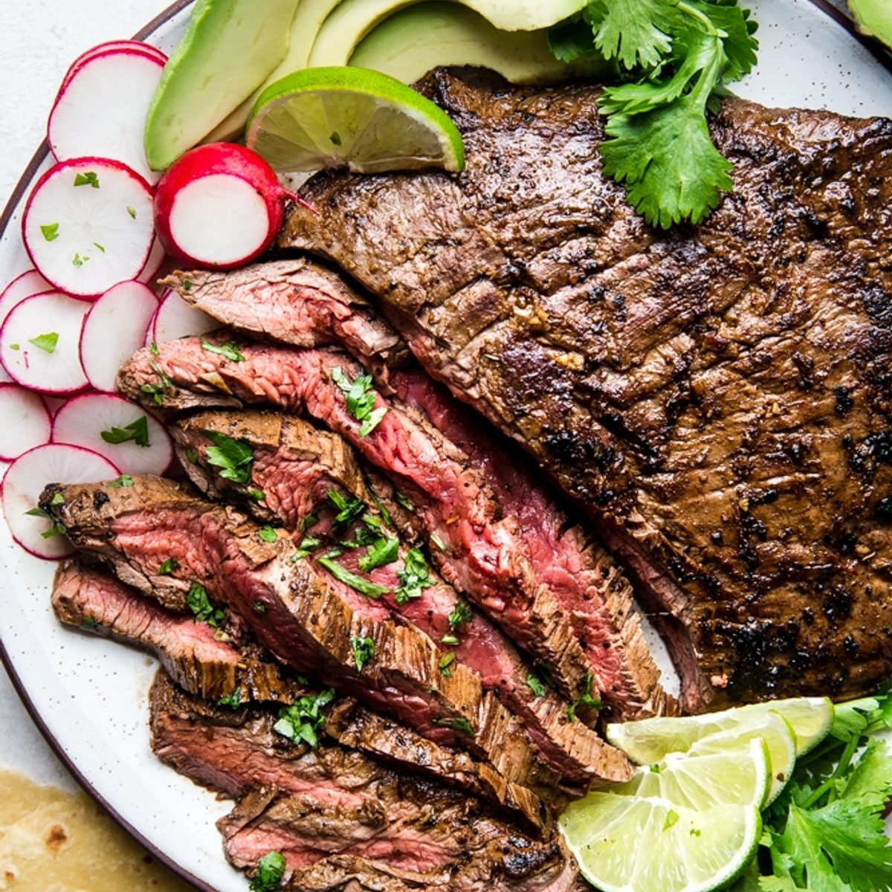

Carne Asada

As the name implies, carne asada is all about the flavor of grilled meat—rich and hearty—and our carne asada marinade is intended to enhance that intrinsic goodness, not overpower it. In fact, many argue that true, authentic carne asada should have
no marinade at all! But we can’t pass up a chance to add a little extra flavor to any meal, so we’ve gone the way of the marinade. That said, we’re keeping it simple and classic. Our go-to carne asada marinade ingredients are:
- Orange Juice
- Lime Juice
- Oil
- Fresh Garlic
- Dried Oregano
- Chili Powder
- Kosher Salt
- Cumin
- Black Pepper
- Cayenne
Now that you’ve whisked up your gorgeously citrus-y carne asada marinade, let’s get grilling! Here’s how to make carne asada:
- Marinate your meat. An hour is enough, but it can sit for up to four hours. Don’t go over four hours, though, because with so much citrus juice in the marinade, the meat will begin to break down too much if you let it sit too long.
- Season! Once the meat is marinated, sprinkle it with a little salt and pepper
- Grill! Usually about five-eight minutes per side, but keep an eye on it. Skirt Steak will be at a perfect medium rare when it reaches 135 degrees.
- Let it rest! Do it! Though there is some disagreement about why it works (because, food science) letting a grilled steak rest for a few minutes before cutting is a sure-fire way to ensure juiciness.
- Slice the grilled steak thinly against the grain and serve.